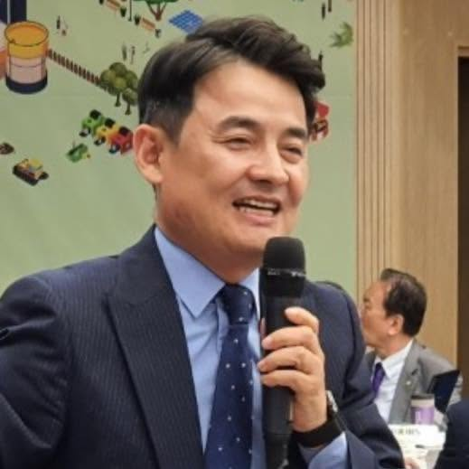

AI 교수 워크샵
운영·퍼실리테이션
우송대학교 AI 비전 수립 워크샵
1사업 개요
| 구분 | 내용 |
|---|---|
| 대주제 | AI 시대, 우송대학교의 미래교육과 대학혁신 전략 |
| 규모 · 편성 | 약 100명 / 10개 조 (외국인 교수 조 별도 운영) |
| 진행 방식 | 기조강연 · 분임토의 · 조별 발표 · 우선순위 선정 · 시상 |
📌 제안 범위
본 견적은 제안요청(RFP) 조건에 따라 fKF 수행분(기획·관리·퍼실리테이션·교보재·결과보고)만 산정. 대학 자체 집행분(식음·시상·장소·기본 장비·교보재 인쇄)은 산출내역에서 제외, §4.2에 별도 표기.
2토의 프레임
공통 주제(우송대 AI 비전·목표)를 중심으로, 5개 분과 주제를 병행 토의
Education
교육
학생 핵심역량 · 수업·평가 혁신
Teaching·Research
수업·연구
교수 역량 · AI 지원 교수법
Administration
행정
일하는 방식 · 학생지원 체계
Industry
산학협력
산업체 요구 · 협력 인프라
Infra
인프라
플랫폼 · 데이터 · 보안체계
3운영 구성 · 일정
준비 · Prepare
사전 설문
- 설문 설계·배포
- 인식·쟁점 분석
- 토의·산출물 설계
→
숙의 · Deliberate
분임토의
- 공통·개별 분과 토의
- 조별 발표
- 우선순위 선정
→
환류 · Follow-up
결과보고
- 결과 종합
- AI 비전·전략과제 초안
- 우선 실행과제
3.1당일 일정 (10:00–17:30)
| 시간 | 내용 | 세부 |
|---|---|---|
| 10:00–10:30 | 개회 · 대학 메시지 | 워크샵 취지·진행 안내 / AI 추진 필요성 공유 |
| 10:30–11:20 | 기조강연 | AI 미래교육 · 글로벌 AX 혁신 · AI 연구혁신 (교내 인사) |
| 11:20–12:00 | 설문 공유 · 조 편성 | 사전 설문 결과 / 분과 주제·산출물 안내 |
| 13:00–14:50 | 분임토의 1·2 | 공통 주제 + 개별 분과(5개 중 선택) |
| 15:00–16:30 | 마무리 · 조별 발표 | 발표자료 작성 / 조별 결과 발표·질의응답 |
| 16:30–17:30 | 우선순위 선정 · 시상 | 조별 결과 종합 · 우선 실행과제 선정 / 시상·마무리 |
3.2운영 인력 구성
- PM 1 — 사업 총괄·일정·운영 관리, 대학 커뮤니케이션 (사전 답사·기획 포함)
- 리딩 퍼실리테이터 1 — 전체 설계·진행 총괄(전체 세션 디렉팅)
- 그룹 퍼실리테이터 10 — 10개 조 1:1 배치, 조별 토의 진행·기록 지원
- 기술 오퍼레이터 1 — 발표·AV·기록 운영
4산출내역서
| 코드 | 항목 · 산출근거 | 수량 | 단위 | 금액(원) |
|---|---|---|---|---|
| 운영 인력 | ||||
| F-01 | PM · 총괄 관리사업 총괄 · 일정 · 대학 커뮤니케이션 | 1 | 인 | 500,000 |
| F-02 | 리딩 퍼실리테이터전체 설계 · 진행 총괄 | 1 | 인 | 1,500,000 |
| F-03 | 그룹 퍼실리테이터10개 조 × 1인 · 300,000/인 | 10 | 인 | 3,000,000 |
| F-04 | 기술 오퍼레이터발표·AV·기록 운영 | 1 | 인 | 500,000 |
| 진행 · 경비 | ||||
| C-01 | 기획 운영비사전 답사·기획 회의·운영 제반 경비 | 1 | 식 | 900,000 |
| C-02 | 교보재 등 진행비교보재 마스터 제작 · 조별 운영키트(전지·포스트잇·마커 등) · 토론 소모품 | 1 | 식 | 500,000 |
| 제공 산출물 | ||||
| D-01 | 사전 설문 설계 및 결과 분석100명 인식조사 · 분석 리포트 | 1 | 식 | 500,000 |
| D-02 | 교보재 기획 · 디자인워크북·기록지·발표양식 콘텐츠·편집 — 인력비 포함 | 1 | 식 | 0 |
| D-03 | 교보재 인쇄 · 제작참가자 배포본 — 대학측 부담 | 100 | 부 | 0 |
| D-04 | 결과 정리 + AI 비전·전략과제 초안기본 정리 — 인력비 포함 / 정식 최종 결과보고서는 협의 시 +500,000(옵션) | 1 | 식 | 0 |
| 공급가액 합계 (VAT 별도) | 7,400,000 | |||
4.1총괄 집계
| 항목 | 산출근거 | 금액(원) |
|---|---|---|
| 공급가액 | 산출내역 합계 (F · C · D) | 7,400,000 |
| 부가가치세 | 공급가액 × 10% | 740,000 |
| 총 견적금액 | 8,140,000원 | |
4.2불포함 사항 (대학 직접 집행)
아래 항목은 RFP 기준 우송대학교 자체 예산·시설로 집행 (본 견적 미포함)
| 항목 | 비고 |
|---|---|
| 중식 · 다과 | 참석자 약 100명 (도시락/레스토랑 등) |
| 시상품 · 상금 | 최우수·우수조 시상 |
| 행사 장소 · 기본 장비 | 회의실(10여 실), 기본 음향·빔·전원 |
| 교보재 인쇄 | 참가자 배포본 100부 · 대학 인쇄팀 (디자인·사양은 fKF 제공) |
| 행정 지원인력 · 주차 | 대학 직원 현물 지원 |
5산출물
| 산출물 | 내용 |
|---|---|
| 사전 설문 패키지 | 설문 문항 설계 · 온라인 집계 · 인식/쟁점 분석 리포트 + 워크샵 반영안 |
| 교보재 일체 | 참가자 워크북(주제·토의가이드·기록양식) · 조별 기록지 · 발표양식 템플릿 · 조별 운영키트 · 명찰/사이니지(디자인) |
| 진행 설계 자료 | 퍼실리테이션 시나리오·운영 큐시트 · 조 편성표(외국인 교수 조 포함) · 그룹 퍼실 가이드 |
| 조별 발표 · 우선순위 결과 | 조별 산출물 발표 운영 · 전략과제/우선 실행과제 선정 결과표 |
| 최종 결과보고서 | 분임토의 종합 · AI 비전 초안 및 추진원칙 · 분야별 전략과제(교육·AX·인프라) · 2026 우선 실행과제 · 현장 기록 : 협의 후 추가 시 500,000원 추가 |
6퍼실리테이터

이병덕
(현) fKF 한국퍼실리테이터연합회 이사장 · 코리아스픽스 대표이사
- 전문 — 숙의형 프로젝트, 공론화 · 리딩 퍼실리테이션
- 대표 공론화 — 동덕여자대학교 공학전환 공론화 리딩 퍼실리테이터
- 조직진단 실적 — 국제보건의료재단(2023), 한국상하수도협회(2022–23), 교육시설안전원(2023), 금천구청 · SH공사 · 광명시 등
- (전) 경력 — GBO R&D Center (San Jose, CA, USA) 서비스기획팀장 (2001–2002)
- (전) 자문 — NIA(한국지능정보사회진흥원) 자문위원
- 저서 — 퍼실리테이터워크북 시리즈, 기업가정신 학교에 가다, 한국인의 생각(1·2, 공저), 토론의 기술
7기관 소개
fKF (사) 한국퍼실리테이터연합회
| 설립 | 2013년 |
| 전문 | 퍼실리테이션, 숙의민주주의, 조직개발 |
| 네트워크 | 행정안전부 등록 유일의 퍼실리테이터 사단법인체 |
코리아스픽스
| 설립 | 2012년 |
| 전문 | 공론화, 원탁회의, 시민참여 |
| 실적 | 동덕여대 공학전환 공론화 리딩 퍼실리테이터 · 외교부 · 국제보건의료재단 · SH공사 등 다수 |
Contact
fKF 한국퍼실리테이터연합회 · 코리아스픽스
TEL02-814-7773
MAILteam@kspeaks.kr